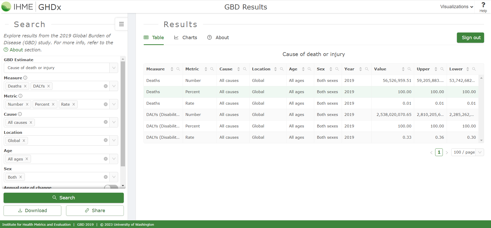
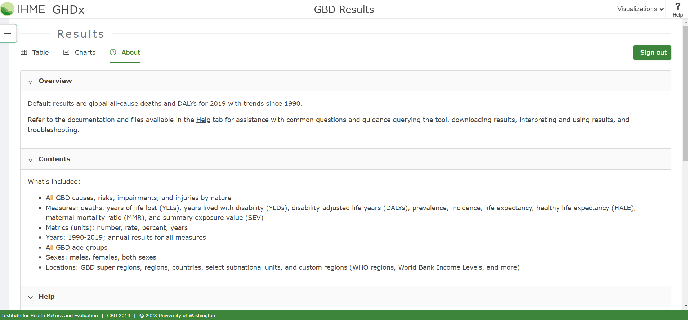
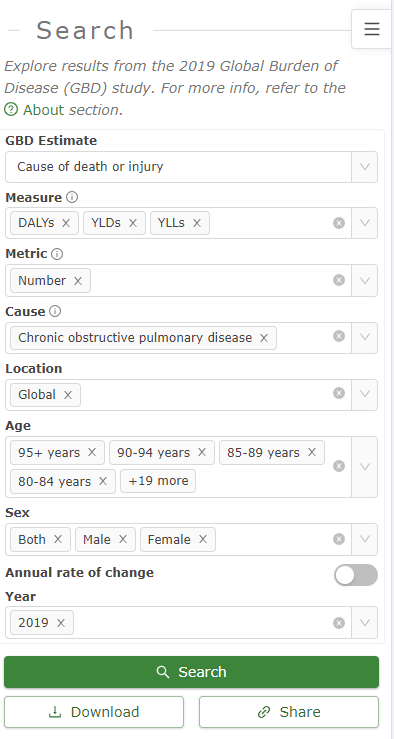
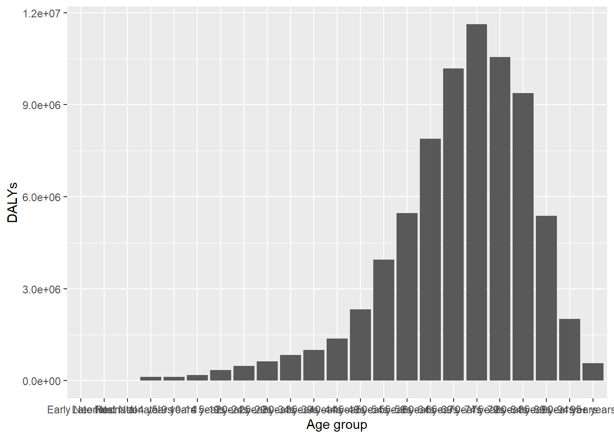
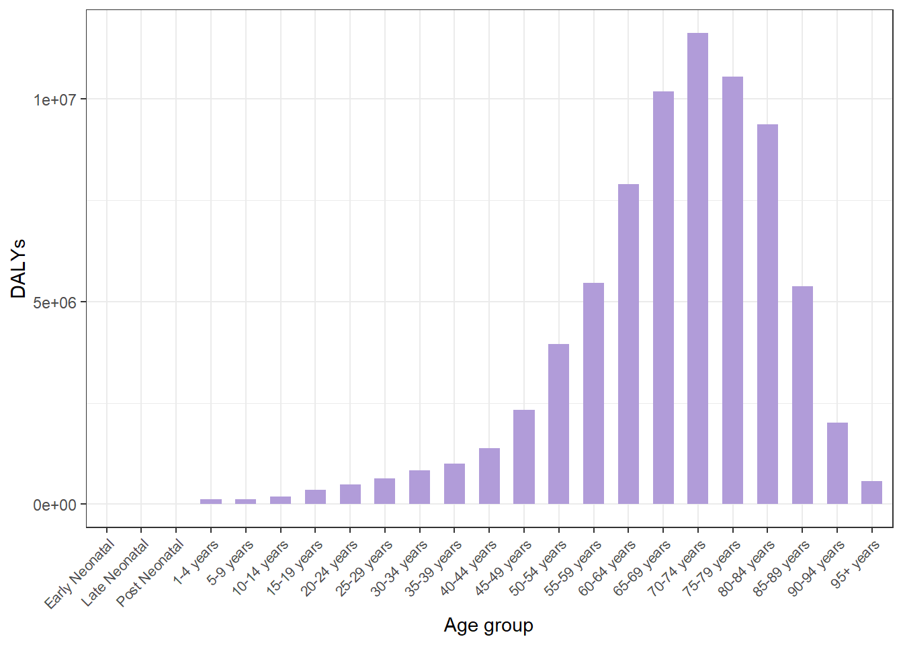
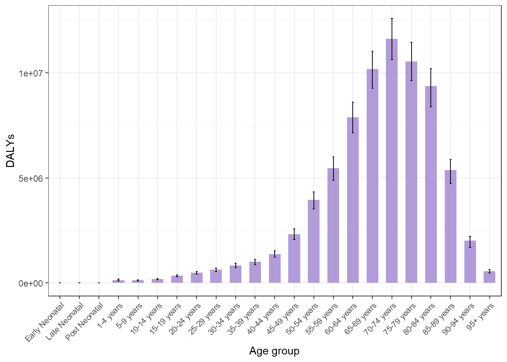
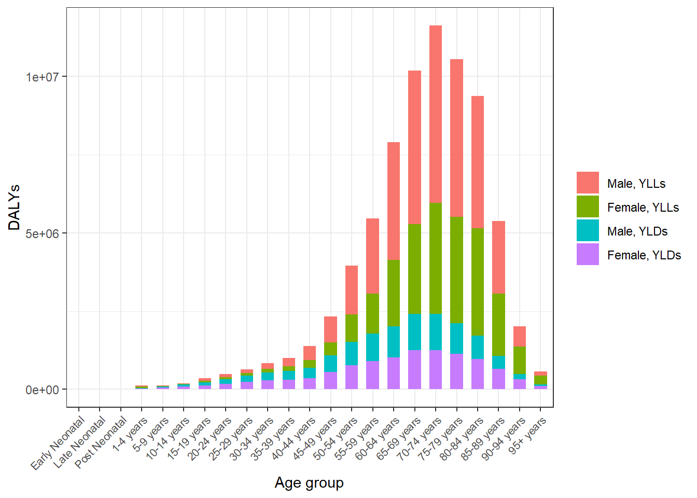
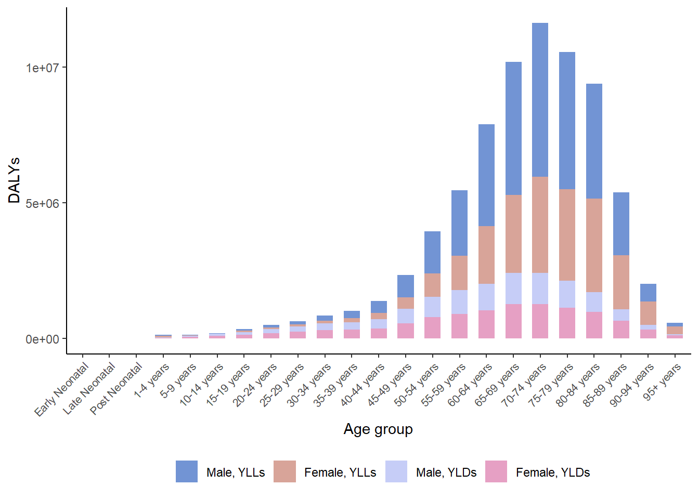
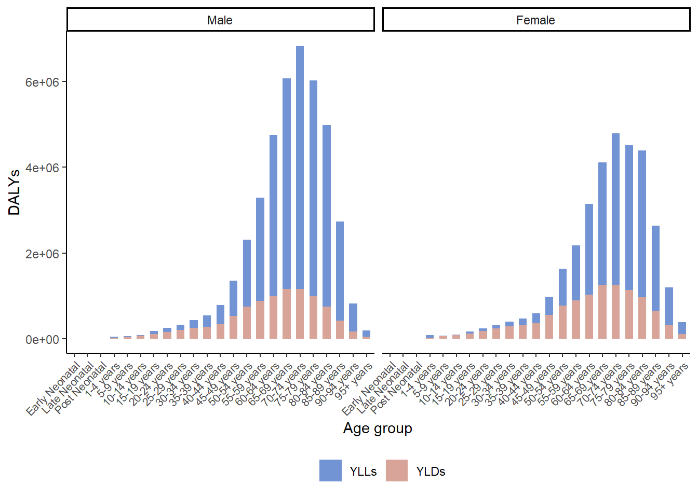

Em uma das primeiras aulas do curso “Descriptive Epidemiology of Diseases and Injuries: the Global Burden of Disease Study” (PPGEpi/UFRGS) foi discutido um exemplo a respeito da doença pulmonar obstrutiva crônica (chronic obstructive pulmonary disease, COPD). Neste post, vamos ver como construir um gráfico para apresentar a carga de COPD por faixa etária.
A COPD é uma inflamação crônica dos pulmões que causa tosse, dificuldade respiratória, muco e chiado no peito. A COPD inclui enfisema e bronquite crônica.
Os anos de vida ajustados por incapacidade (Disability‐adjusted life years, DALYs) refletem de forma abrangente perdas de saúde fatais e não fatais e são definidos como a combinação de anos de vida perdidos (years of life lost, YLLs) e anos vividos com incapacidade (years lived with disability, YLDs)1. Os YLLs representam as perdas de saúde devido à morte prematura em comparação com a expectativa de vida padrão. Os YLDs são calculados multiplicando-se o número de pessoas vivendo com esse desfecho pelo peso da incapacidade que representava a magnitude da perda de saúde associada ao desfecho.
Dessa forma, os DALYs expressam a carga de uma determinada doença. Em um post futuro, pretendo abordar a definição dos DALYs, YLLs, YLDs, expectativa de vida padrão, pesos de incapacidade e os dados envolvidos na estimativa destas quantidades populacionais.
Antes de construir o gráfico, precisamos ter acesso aos dados. Os dados sobre a carga global de COPD foram extraídos usando a ferramenta GBD Results Tool do Global Health Data Exchange do GBD 2019.

No primeiro acesso ao GBD Results Tool é necessário realizar um cadastro. Na aba About são disponibilizados manuais básicos para uso da ferramenta.

Para este exemplo, a seguinte configuração foi especificada:

O resultado da consulta pode ser visualizado na tela do GBD Results. Ao clicar no botão Download o usuário tem acesso ao arquivo de dados em csv2. Este arquivo será utilizado para a construção do gráfico.
Uma vez que baixamos o arquivo de dados, vamos importá-lo para o R.
library(readr)
gbd_copd <- read_csv(file = here::here("data",
"IHME-GBD_2019_DATA-a45abb03-1.csv"))Aqui utilizamos a função read_csv do pacote readr. Além disso, utilizamos a função here do pacote de mesmo nome. Se você ainda não conhece a função here veja este post sobre fluxo de trabalho orientado a projetos em R.
Veja que os dados estão no formato “longo”, pois os dados de YLLs, YLDs, DALYs, assim como sexo masculino, feminino e ambos os sexos encontra-se “empilhados”.
gbd_copd## # A tibble: 201 × 10
## measure locat…¹ sex age cause metric year val upper lower
## <chr> <chr> <chr> <chr> <chr> <chr> <dbl> <dbl> <dbl> <dbl>
## 1 YLDs (Years Live… Global Male 0-6 … Chro… Number 2019 0 0 0
## 2 YLDs (Years Live… Global Fema… 0-6 … Chro… Number 2019 0 0 0
## 3 YLDs (Years Live… Global Both 0-6 … Chro… Number 2019 0 0 0
## 4 YLDs (Years Live… Global Male 7-27… Chro… Number 2019 0 0 0
## 5 YLDs (Years Live… Global Fema… 7-27… Chro… Number 2019 0 0 0
## 6 YLDs (Years Live… Global Both 7-27… Chro… Number 2019 0 0 0
## 7 YLDs (Years Live… Global Male 28-3… Chro… Number 2019 597. 756. 414.
## 8 YLDs (Years Live… Global Fema… 28-3… Chro… Number 2019 680. 854. 484.
## 9 YLDs (Years Live… Global Both 28-3… Chro… Number 2019 1277. 1591. 893.
## 10 YLDs (Years Live… Global Male 1-4 … Chro… Number 2019 14636. 18507. 10542.
## # … with 191 more rows, and abbreviated variable name ¹locationO próximo passo é formatar as variáveis de interesse. Isso vai facilitar o nosso trabalho final de construção do gráfico. Assim, vamos ordenar corretamente os níveis da variável idade (age) e atribuir os rótulos desejados.
gbd_copd$age <- factor(
x = gbd_copd$age,
levels = unique(gbd_copd$age),
labels = c(
c("Early Neonatal", "Late Neonatal", "Post Neonatal"),
unique(gbd_copd$age)[4:19],
paste(unique(gbd_copd$age)[20:22], "years"),
unique(gbd_copd$age)[23]
)
)Com o auxílio do pacote dplyr, vamos também aproveitar para transformar os nomes da variável measure em nomes mais curtos.
library(dplyr)
gbd_copd <- gbd_copd %>%
mutate(measure = case_when(
measure == "YLDs (Years Lived with Disability)" ~ "YLDs",
measure == "YLLs (Years of Life Lost)" ~ "YLLs",
measure =="DALYs (Disability-Adjusted Life Years)" ~ "DALYs")
)Neste primeiro gráfico, vamos apresentar a informação da carga global de COPD para ambos os sexos no ano de 2019 em número de DALYs. Assim, vamos filtrar os dados pelas variáveis measure e sex.
gbd_copd_daly_b <- gbd_copd %>%
filter(measure == "DALYs", sex == "Both")Para construir o gráfico de barras utilizaremos o pacote ggplot23. Agora que já filtramos os dados de DALYs, vamos utilizar as variáveis val (os valores referentes ao número de DALYs) e age.
library(ggplot2)
p1 <- ggplot(data = gbd_copd_daly_b,
mapping = aes(x = age, y = val)) +
geom_bar(stat = "identity") +
labs(x = "Age group", y = "DALYs")
p1
Notamos que muitos aspectos do gráfico podem ser melhorados, tais como o tema, as cores e a largura das barras e os rótulos dos eixos.
p1 <- ggplot(data = gbd_copd_daly_b,
mapping = aes(x = age, y = val)) +
geom_bar(stat = "identity", width = 0.6, fill = "#b19cd9") +
scale_y_continuous(breaks = c(0, 5000000, 10000000)) +
labs(x = "Age group", y = "DALYs") +
theme_bw() +
theme(
axis.text.x = element_text(hjust = 1,
angle = 45,
size = 8))
p1
Os dados disponibilizados pelo GBD são estimativas de quantidades populacionais. Além das estimativas pontuais, o GBD também disponibiliza os limites de um intervalo de incerteza4 de 95% (variáveis upper e lower do objeto de dados). Vamos incorporar estes intervalos em nosso gráfico. Para isso, vamos acrescentar uma “camada” ao gráfico anterior.
p2 <- p1 +
geom_errorbar(aes(ymin = lower, ymax = upper),
colour = "black", width = .1)
p2
Como os DALYs expressam a soma dos YLLs e YLDs, seria interessante apresentar no gráfico a contribuição de YLLs e YLDs para os DALYs de COPD. Além, disso estratificar este dado por sexo. Assim, filtramos o objeto de dados gbd_copd (que contém a informação completa do arquivo baixado do GBD Results Tool) e criamos a variável que combina os níveis da variável sex com os níveis da variável measure.
gbd_copd_yl_mf <- gbd_copd %>%
filter(measure != "DALYs", sex != "Both") %>%
mutate(sex = factor(x = sex),
sex = relevel(sex, ref = "Male"),
measure = factor(x = measure),
measure = relevel(measure, ref = "YLLs"),
sex_measure = interaction(sex, measure, sep = ", "))A estrutura do gráfico é parecida com o gráfico de barras simples. Devemos apenas acrescentar o elemento fill aos elementos estéticos do gráfico (função aes).
p3 <- ggplot(data = gbd_copd_yl_mf,
mapping = aes(x = age, y = val, fill = sex_measure)) +
geom_bar(stat = "identity", width = 0.6) +
scale_y_continuous(breaks = c(0, 5000000, 10000000)) +
labs(x = "Age group", y = "DALYs", fill = "") +
theme_bw() +
theme(
axis.text.x = element_text(hjust = 1,
angle = 45,
size = 8))
p3
Sempre podemos especificar um outro tema, ou outra paleta de cores, assim como configurar a posição da legenda do gráfico.
library(wesanderson)
p3 <- ggplot(data = gbd_copd_yl_mf,
mapping = aes(x = age, y = val, fill = sex_measure)) +
geom_bar(stat = "identity", width = 0.6) +
scale_y_continuous(breaks = c(0, 5000000, 10000000)) +
scale_fill_manual(values = rev(wes_palette(n = 4, name = "GrandBudapest2"))) +
labs(x = "Age group", y = "DALYs", fill = "") +
theme_classic() +
theme(
legend.position = "bottom",
axis.text.x = element_text(hjust = 1,
angle = 45,
size = 8))
p3
Uma alternativa a este último gráfico é utilizar a variável measure no argumento fill e a variável sex com a função facet_grid.
p4 <- ggplot(data = gbd_copd_yl_mf,
mapping = aes(x = age, y = val, fill = measure)) +
geom_bar(stat = "identity", width = 0.6) +
# scale_y_continuous(breaks = c(0, 5000000, 10000000)) +
scale_fill_manual(values = rev(wes_palette(n = 4, name = "GrandBudapest2"))) +
labs(x = "Age group", y = "DALYs", fill = "") +
theme_classic() +
theme(
legend.position = "bottom",
axis.text.x = element_text(hjust = 1,
angle = 45,
size = 8)) +
facet_grid( ~ sex)
p4
O resultado é um painel com dois gráficos, um para cada nível da variável sex. Depois é só salvar no formato e resolução que você desejar com a função ggsave!
Murray CJ. Quantifying the burden of disease: the technical basis for disability-adjusted life years. Bull World Health Organ. 1994;72(3):429-45. PMID: 8062401; PMCID: PMC2486718.↩︎
Global Burden of Disease Collaborative Network. Global Burden of Disease Study 2019 (GBD 2019) Results. Seattle, United States: Institute for Health Metrics and Evaluation (IHME), 2020. Available from https://vizhub.healthdata.org/gbd-results/.↩︎
Se você ainda não conhece o pacote ggplot2, não deixe de conferir o material do minicurso Pintando e Bordando no R apresentado no 1º Datathon da UFRGS.↩︎
A razão de se utilizar o termo “intervalo de incerteza” no lugar de “intervalo de credibilidade” é algo que ainda não compreendo bem.↩︎